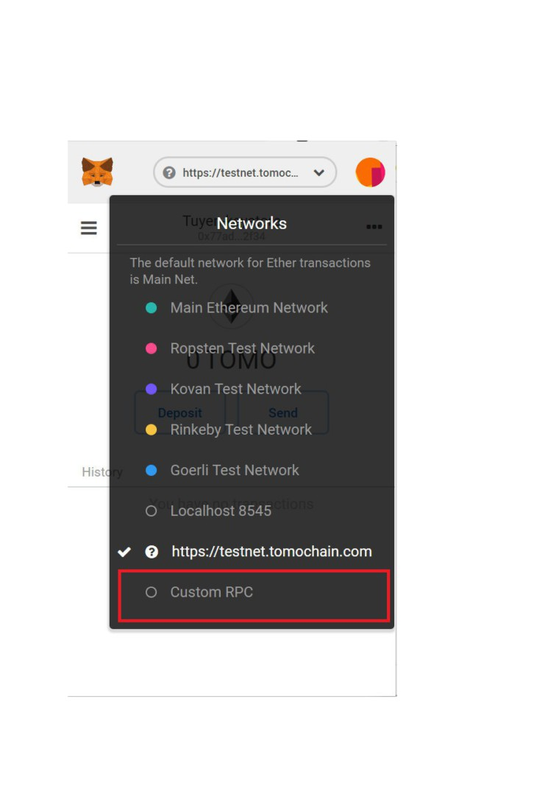
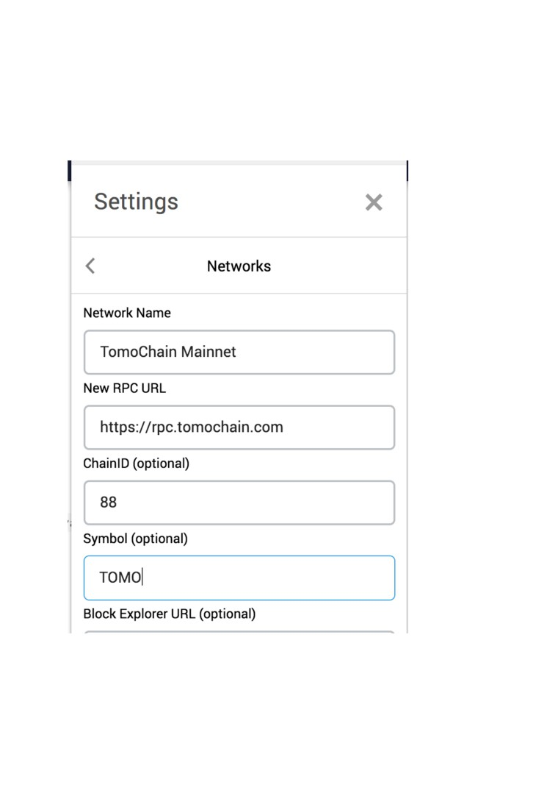

Metamask
Step 1: Click MetaMask logo on the browser to open the Extension -> select Network ->
select Custom RPC as shown below:

Step 2: When Settings screen pops up, enter the following information:
• Network Name: TomoChain Mainnet
• ChainID: 88
• Symbol: TOMO
Step 3: Scroll down then click Save to connect to TomoChain Mainnet.